Ancestors · relatives · family history
Finding the people behind your family story
I trace ancestors, relatives from past generations and lost family branches through archival records — restoring the people behind your family history.
Start with a name, a town, or one old document.
About
A researcher devoted to Jewish family history
For more than fifteen years I have worked inside Ukrainian and Polish archives.
I studied Jewish History and Culture at the University of Warsaw.
My work can extend to other regions of Ukraine and Poland.
POLIN Museum
Collaboration
University of Warsaw
MA studies
JewishGen
Recommended researcher
Services
What I can find for you
Tracing ancestors and relatives through archives
Reconstructing family branches and connections
Archival document retrieval
Building detailed family trees
Researching the story of one person
Documents for citizenship claims
Transcription and translation of records
Consultations and research guidance
From the archives
Real records, real families
A glimpse of what I work with every day.
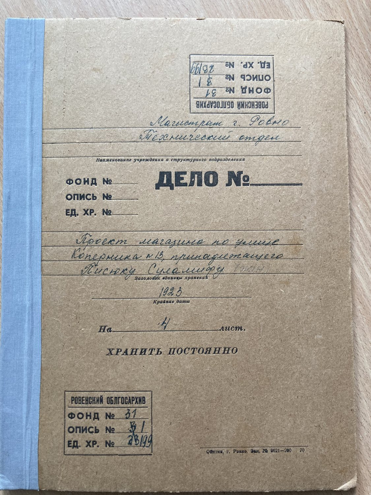
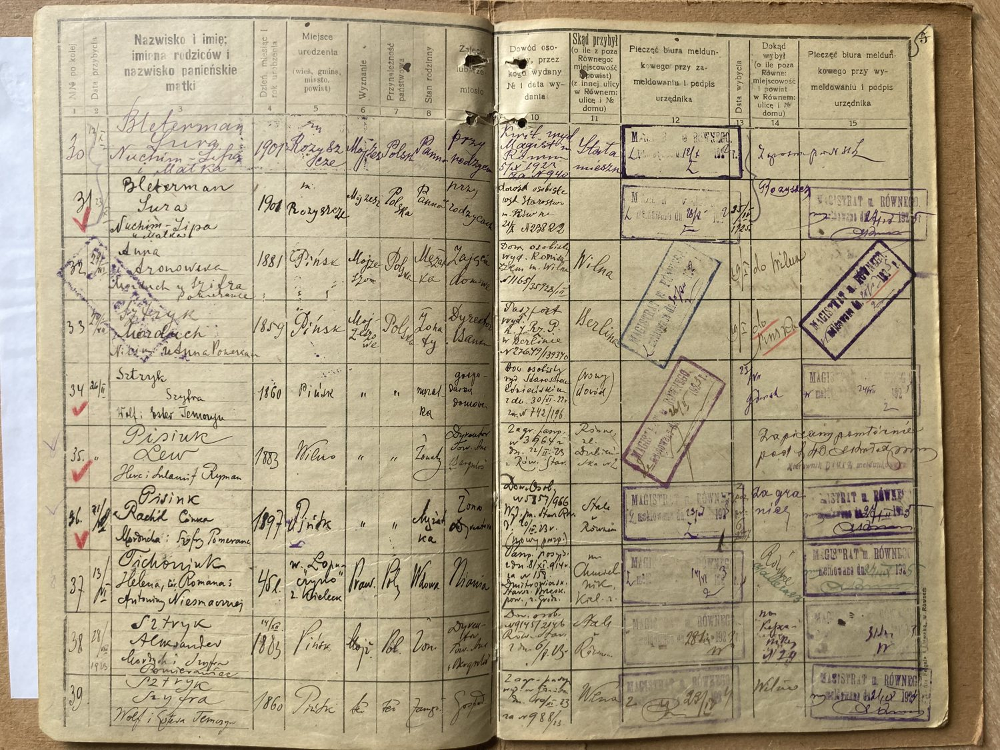
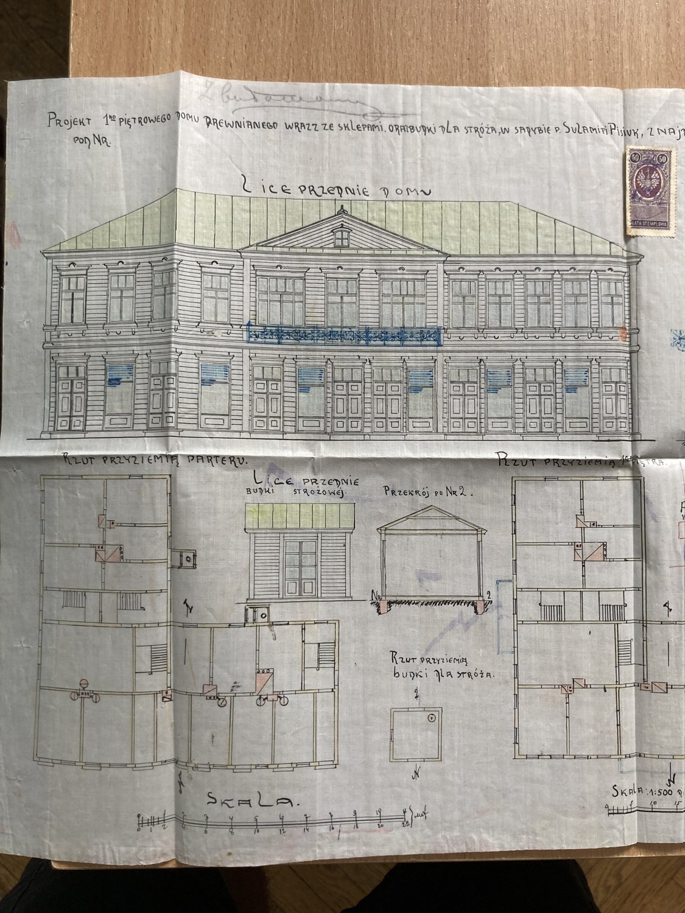
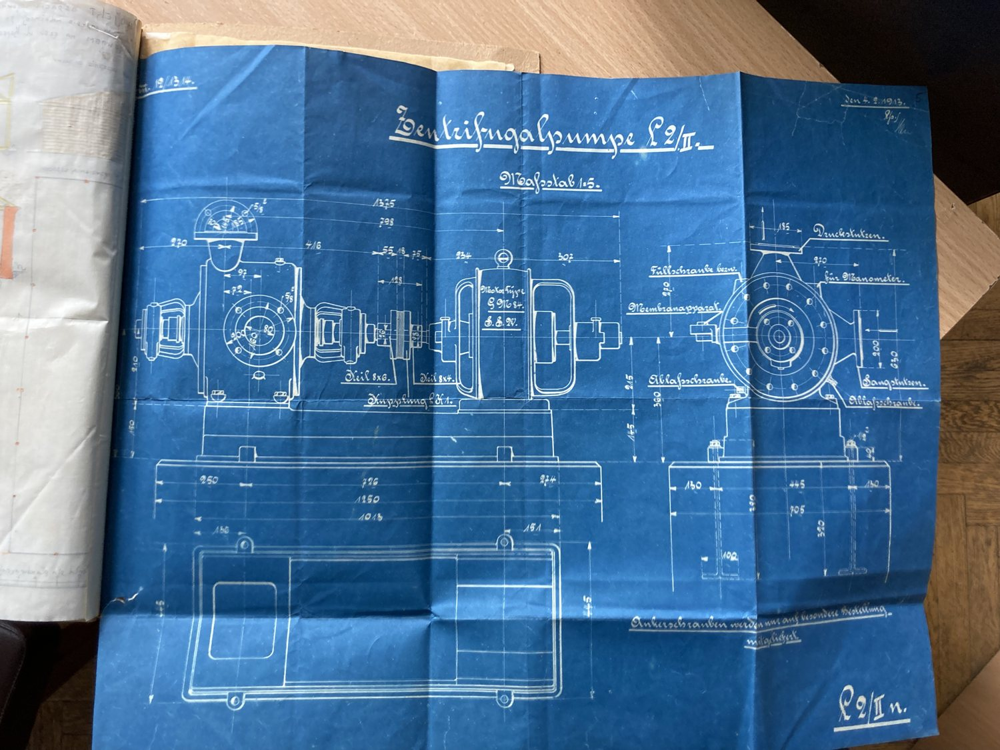
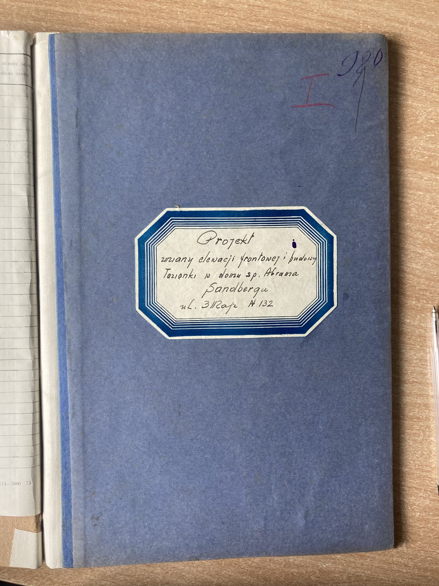
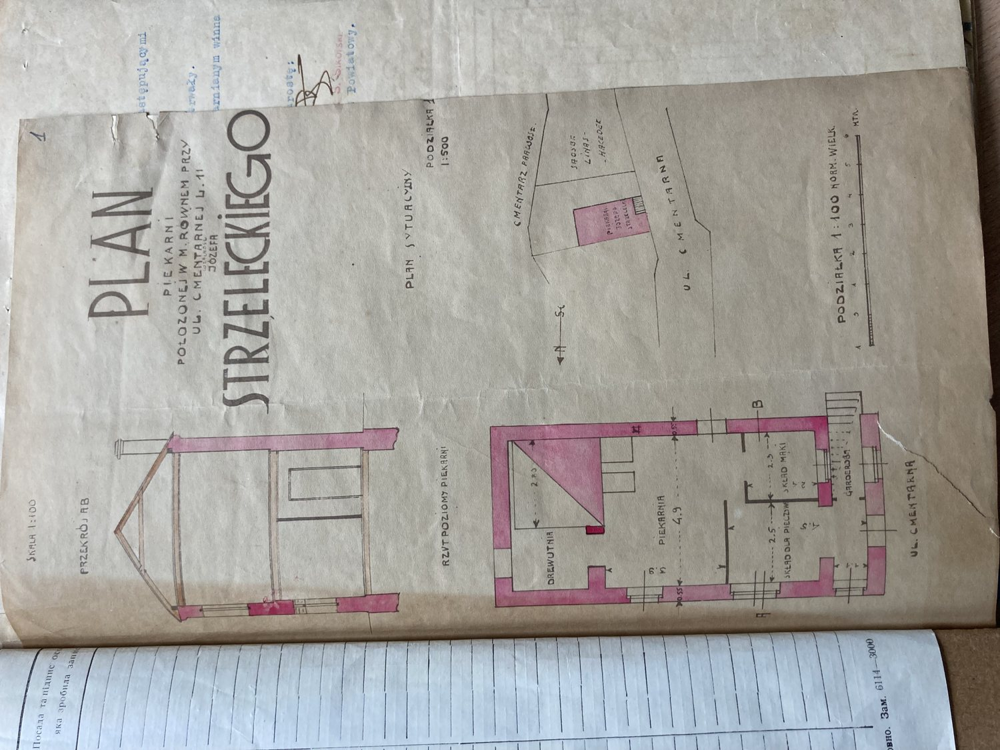
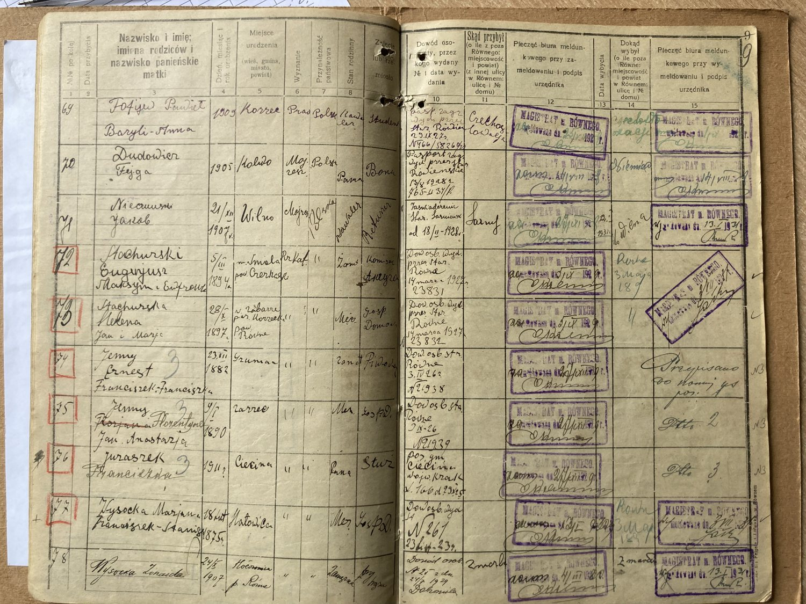
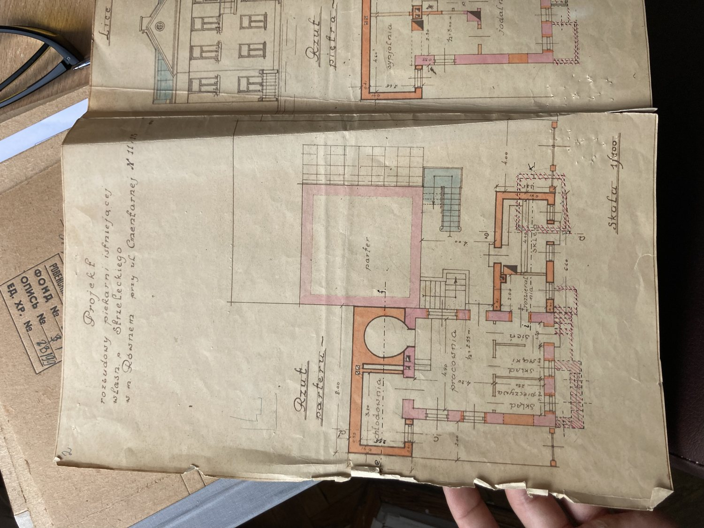
Heritage of Rivne
The world these records come from
Behind every document is a living town.
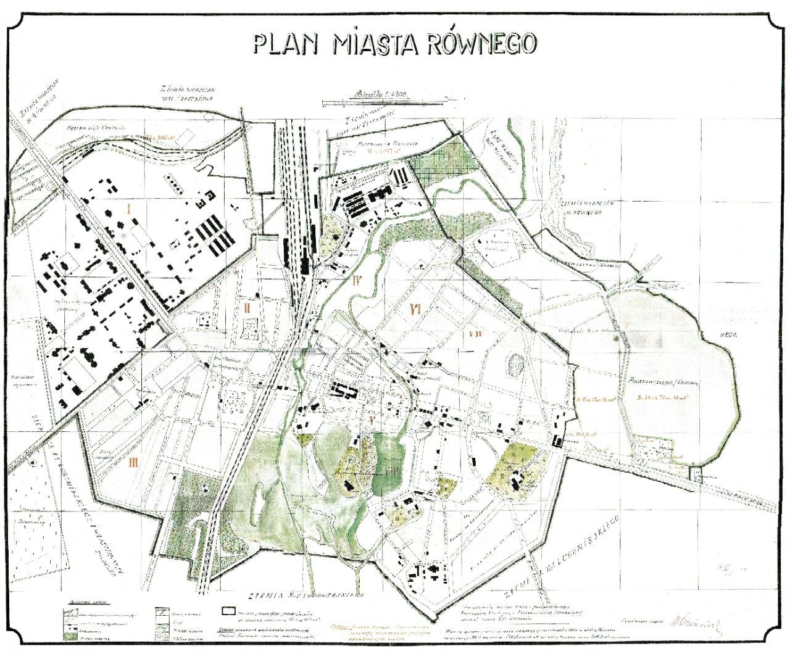
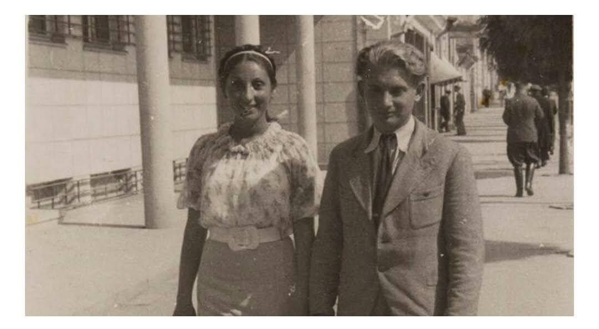
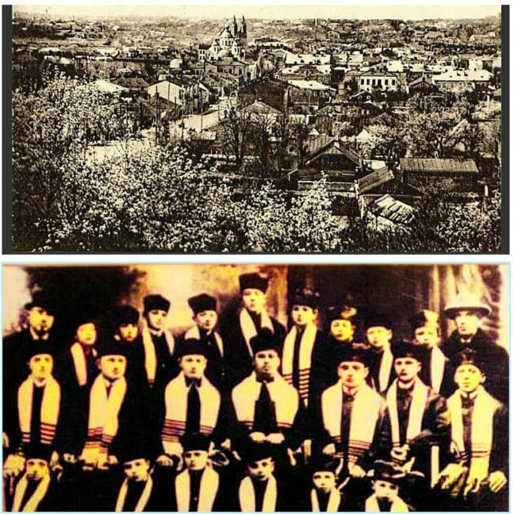
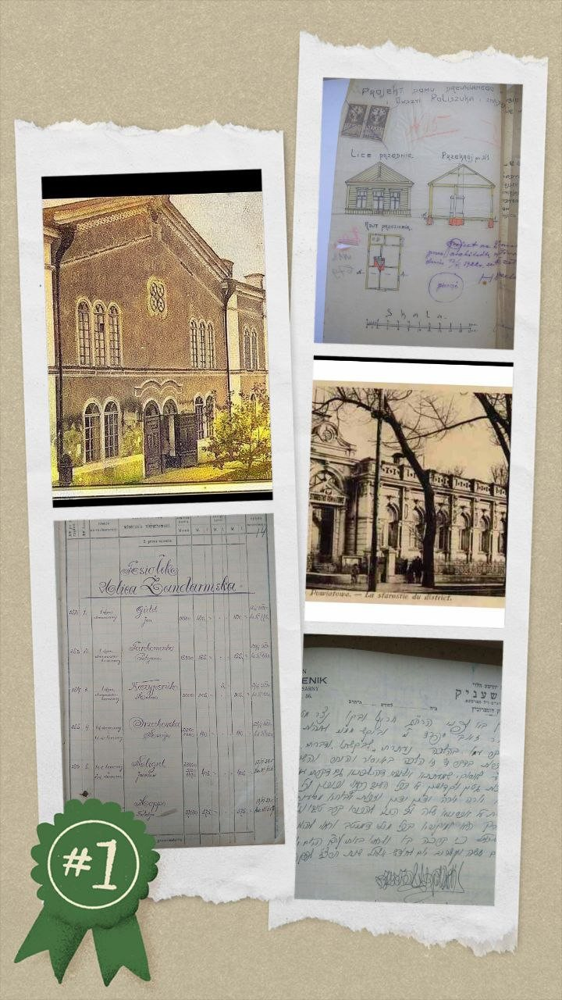
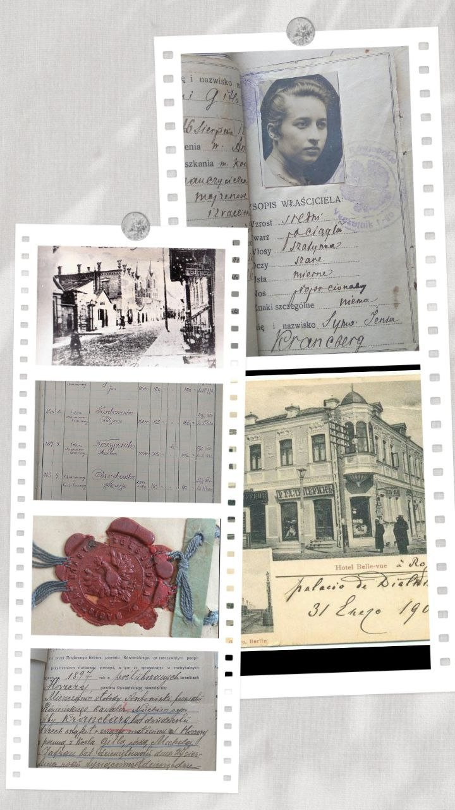
How I work
From first letter to your family's story
Consultation
We talk through your family.
Agreement
A realistic plan; prepayment.
Search
I search the archives.
Analysis
I interpret the documents.
Report
A clear report and family tree.
Questions
What people usually ask first
Consultation
Tell me about your search
Share what you know and how to reach you.
- Confidentiality — kept strictly confidential.
- Timeline — one to three months.
- What you receive — reports, documents, trees.
Prefer to write directly?
Your request is ready
I've opened WhatsApp with your details. rivnejew@gmail.com